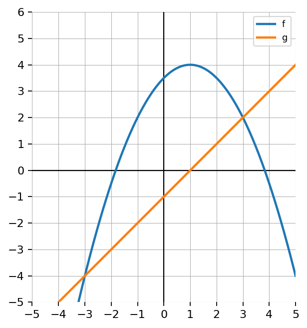
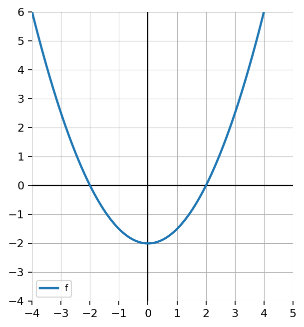

Extra Practice 2.3.4
Let \(f(x)=x^2+1\) and \(g(x)=x-3\). Find:
- \(f(g(x))\)
- \(g(f(x))\)
Use the graph of \(f\) and the graph of \(g\).
- Estimate \(g(1)\).
- Use that result to estimate \(f(g(1))\).
- Estimate \(f(1)\).
- Use that result to estimate \(g(f(1))\).
- Compare the results.

Use the graph of \(f\), the table for \(g\), and the equation for \(h\).
\(h(x)=x+2\)
| \(x\) | \(-2\) | \(-1\) | \(0\) | \(1\) | \(2\) |
|---|---|---|---|---|---|
| \(g(x)\) | \(0\) | \(2\) | \(-1\) | \(1\) | \(3\) |
- Find \(h(g(-1))\).
- Use the graph of \(f\) to find \(f(h(g(-1)))\).
- Find \(h(g(0))\).
- Use the graph of \(f\) to find \(f(h(g(0)))\).
- Explain the order of inputs and outputs through all three representations.

A company applies a 10% discount and then adds a \$5 service fee.
- Model the discount with a function.
- Model the service fee with a function.
- Write the composition for discount first, fee second.
- Write the composition for fee first, discount second.
- Which is better for the customer? Justify mathematically.
Simplify each square root.
\(\sqrt{12}\)
\(\sqrt{20}\)
\(\sqrt{27}\)
\(\sqrt{75}\)
State whether each pair is made of like radicals.
\(3\sqrt{5},\ 7\sqrt{5}\)
\(2\sqrt{3},\ 5\sqrt{12}\)
\(4\sqrt[3]{2},\ -9\sqrt[3]{2}\)
\(\sqrt{8},\ \sqrt[3]{8}\)
Which expression is equivalent to \(\sqrt{48}\)?
\(4\sqrt{3}\)
\(3\sqrt{4}\)
\(2\sqrt{12}\)
\(\sqrt{16}\sqrt{3}\)
Explain how you know.
A student says:
“\(\sqrt{50}\) is already simplified because \(50\) is not a perfect square.”
What is wrong with the statement?
Simplify each expression. Assume all variables are nonnegative.
\(\sqrt{12x^2}\)
\(\sqrt{50a^4}\)
\(\sqrt{72m^6}\)
\(\sqrt{98y^8}\)
Rationalize the denominator.
\(\dfrac{5}{\sqrt{2}}\)
\(\dfrac{3}{\sqrt{7}}\)
\(\dfrac{2}{3\sqrt{5}}\)
\(\dfrac{6}{\sqrt{12}}\)
Which expressions are equivalent to \(6\sqrt{3}\)?
\(\sqrt{108}\)
\(3\sqrt{12}\)
\(2\sqrt{27}\)
\(\sqrt{36}\sqrt{3}\)
\(\sqrt{18}+\sqrt{18}\)
Explain your choices.
A rectangle has side lengths \(2\sqrt{3}+1\) and \(3\sqrt{3}-2\).
Write an exact expression for the area.
Simplify the area completely.
Write an exact expression for the perimeter.
Simplify the perimeter completely.
Explain why exact radical form is more useful than decimal approximations here.
Determine the domain of $p(x)=\frac{1}{x-3}$.
Determine the domain and range of the graphed function. Use interval notation.

A student finds the domain of $f(x)=\frac{x}{x^2-25}$ and writes $(-\infty,\infty)$ because the denominator is a polynomial. Identify the mistake and correct the domain.
A school sells tickets for a dance. Tickets cost $8 each, and the room can hold at most 250 students. Define a function for revenue based on tickets sold. State a reasonable domain and range, and explain why both are restricted.